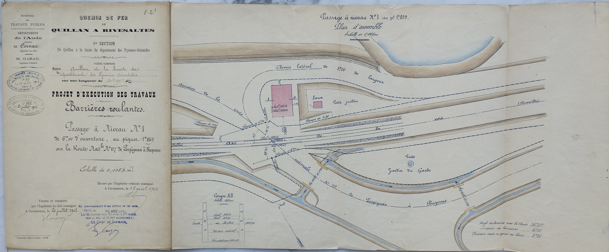
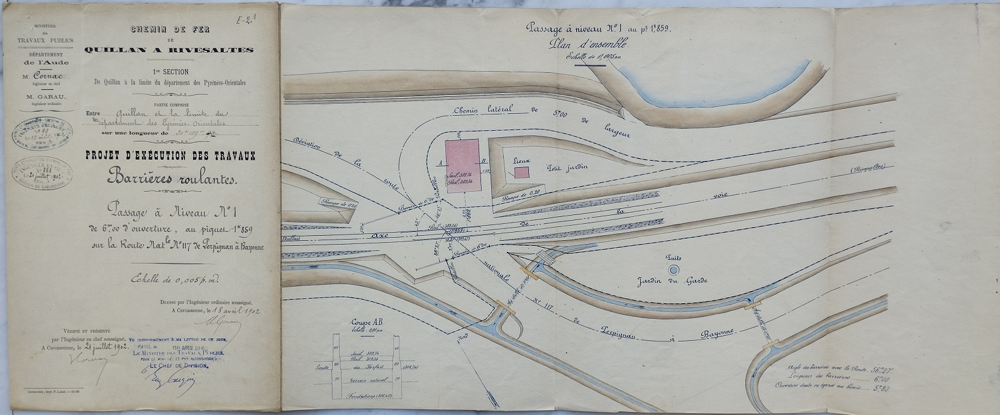

Pour alléger la page sur l'historique de voie ferrée, je crée cette annexe avec les informations collectées aux archives départementales de Carcassonne sur les passages à niveau de la partie audoise de la ligne

 



Manque les figures 4 et 5 - j'ai mal ouvert le plan apparament - le pire c'est que c'est la façade qui me manque... Il ne me restera plus qu'à y retourner pour la photographier


Construit 20 ans plus tôt mais qui doit être quasi du même modèle que ceux sur la ligne Quillan-Rivesaltes dans l'Aude - Photo Jean-Pierre LESCURE